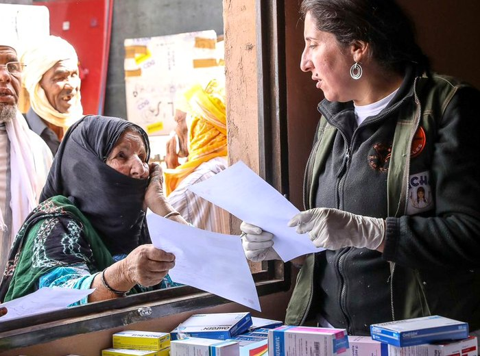
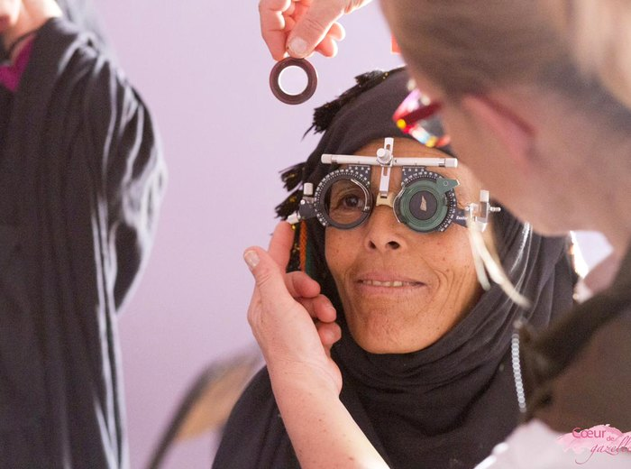
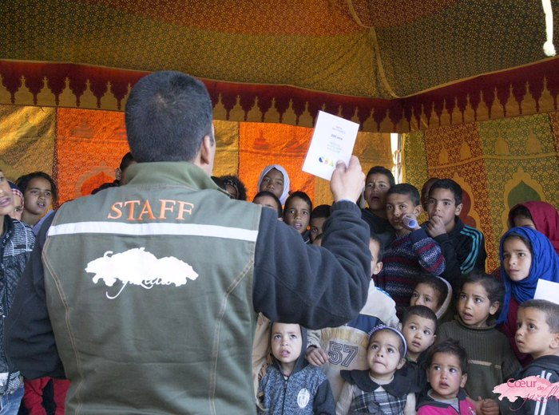
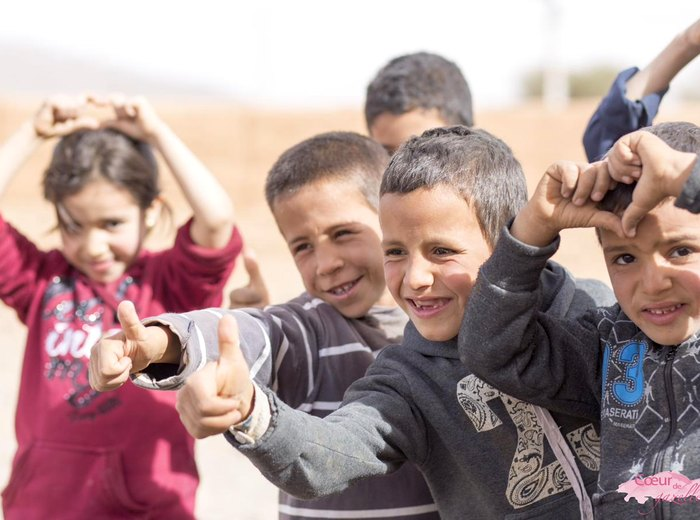
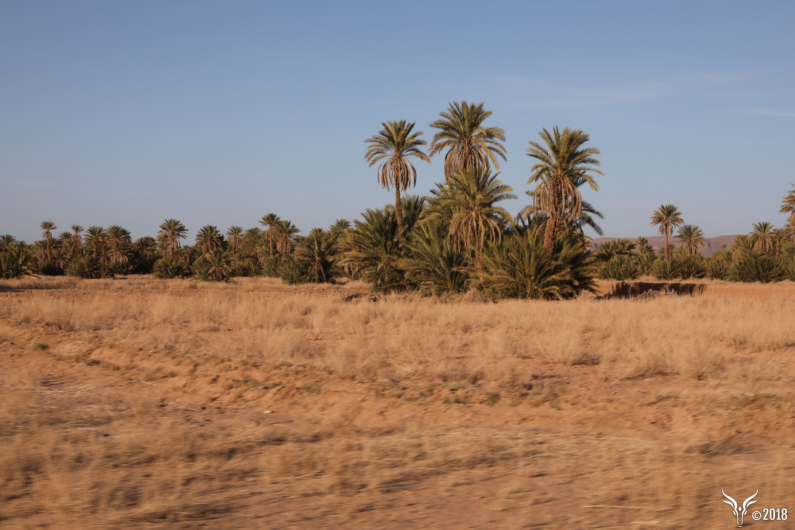
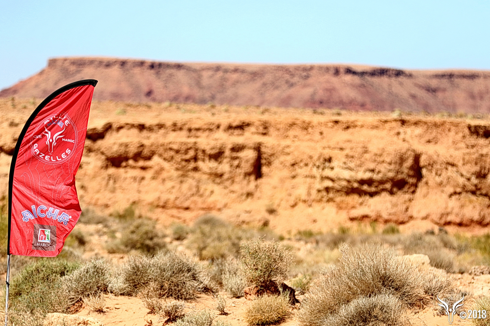
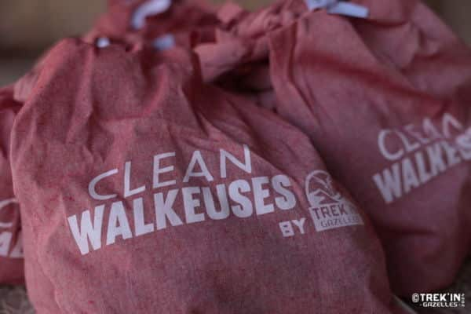

Rouler pour une cause
Depuis plus de trente ans, le rallye est accueilli sur les terres marocaines. Sa responsabilité est d'y redonner dans la durée.
Vingt-quatre ans d'actions, comptées une à une
C'est le rôle de Cœur de Gazelles, association caritative reconnue d'intérêt général créée en 2001, qui déploie ses actions toute l'année en s'appuyant sur la logistique du rallye et en partenariat avec les ministères marocains.
des patients de plus de quarante ans n'avaient jamais consulté de médecin.
des enfants de moins de douze ans n'avaient jamais eu de suivi médical.
Les domaines d'intervention


Santé
La plus importante caravane médicale itinérante du sud du Maroc, en partenariat avec le Ministère marocain de la Santé. Six spécialités : médecine générale, pédiatrie, gynécologie, ophtalmologie, dermatologie, chirurgie.
Les médicaments sont pris en charge à 100 % — 285 830 boîtes distribuées à ce jour. L'équipe médicale dispose aussi d'un échographe mobile : 2 134 patients ont bénéficié d'un suivi au-delà de la caravane, et 279 opérations chirurgicales ont été réalisées sur place ou financées.


Éducation
Neuf écoles entièrement rénovées, plus de 1 300 enfants concernés, et 490 vélos distribués aux collégiens vivant à plus de dix kilomètres de leur établissement.
S'y ajoutent 1 840 m³ de dons acheminés par les participantes — dont 1 450 m³ de vêtements chauds pour tous les écoliers des villages concernés.

Développement économique durable
La plus grande palmeraie solidaire du Maroc : 17 456 arbres plantés (palmiers dattiers, oliviers), 655 citernes d'eau, 26 puits construits, et plus de 3 000 mètres de canaux d'irrigation rénovés en 2025. Des revenus durables pour les familles, une lutte concrète contre l'exode rural et la désertification.
Ce projet porte un nom : la Green Day. Il est financé par les équipages du Bab el Raid, l'autre événement porté par l'organisateur du rallye — la preuve que la solidarité ne s'arrête pas au Rallye Aïcha des Gazelles.

Sensibilisation écologique
L'éco-caravane : plus de 50 000 sacs en coton distribués depuis 2011, 41 821 personnes sensibilisées à l'impact du plastique, et 36 800 litres de déchets plastiques ramassés et incinérés depuis 2021.
Une même agence, trois aventures, un seul cap
Le Rallye Aïcha des Gazelles est organisé par Maïenga, qui porte deux autres événements construits sur les mêmes valeurs : le Trek'in Gazelles et le Bab el Raid. Chacun a sa propre action solidaire.

Trek'in Gazelles — Les CleanWalkeuses du désert
Depuis 2021, lors de ce trek 100 % féminin, les participantes ramassent les déchets plastiques rencontrés sur leur parcours, sac de collecte en main. Elles marchent aussi pour le Secours Populaire Français : chaque balise trouvée déclenche un don de 5 € reversé à l'association — 96 075 € cumulés depuis 2021, soit environ 30 000 € par an.
Bab el Raid — La Green Day et la journée solidaire
Ce raid automobile ouvert à tous (par équipe de 2, de la France au Maroc en passant par l'Espagne) finance la Green Day, le projet de palmeraie solidaire décrit ci-dessus, et intègre une journée entièrement dédiée à l'action solidaire dans son parcours.
Rallye Aïcha des Gazelles — La caravane médicale
Notre propre événement, décrit sur cette page : soins gratuits, éducation, développement économique, sensibilisation écologique, portés par Cœur de Gazelles.
Le seul rallye au monde certifié ISO 14001
Depuis 2010, l'organisateur du Rallye Aïcha des Gazelles est la seule agence événementielle au monde, dans le domaine du sport automobile, à détenir une certification attestant de la conformité de son système de management environnemental à la norme ISO 14001. Cette certification est réévaluée chaque année et a été renouvelée en 2025.
Tous les chiffres proviennent du rapport RSE Programme CAP, édition juin 2024 – juin 2025.
Quatre axes de travail, avec des résultats mesurés chaque année
Chaque axe est déplié ci-dessous : cliquez pour en lire le détail.
Air 1 493 t CO₂e mesurées chaque année, jusqu'à 1 754 t absorbées par la palmeraie
1 493 tonnes de CO₂e sont émises chaque année pour l'ensemble des événements (dont 1 010 t pour le seul Rallye Aïcha des Gazelles) ; une logistique optimisée en évite 64 t par an, et jusqu'à 1 754 t sont absorbées par la palmeraie plantée dans le cadre de la Green Day.
Eau 63 litres par personne et par jour, contre 153 litres en moyenne en France
La consommation d'eau sur les événements est de 63 litres par personne et par jour, contre 153 litres en moyenne en France (source ADEME). Une baisse de 5 % a été enregistrée sur l'édition 2024-2025, un niveau jamais atteint jusqu'ici.
Déchets 100 % des déchets traités, bivouac sans plastique à usage unique
100 % des déchets produits sont traités : 50 % incinérés sur place par un camion incinérateur mobile, 50 % recyclés. Le bivouac est à zéro plastique à usage unique depuis mars 2023. Depuis le lancement de la démarche, 150 000 bouteilles d'eau plastique ont été upcyclées en objets design ou en matériau de construction (murs d'un centre d'artisanat et d'une crèche au Maroc).
Biodiversité Bivouacs à distance des zones sensibles, sanctions sportives à l'appui
Bivouacs installés à distance des zones naturelles sensibles en accord avec le ministère marocain du Tourisme, kits antipollution sur chaque véhicule d'assistance, filtration des eaux usées, sanctions sportives en cas de comportement environnemental problématique.
Le Gazelle Lab, un terrain d'essai pour la mobilité électrique
Depuis 2017 et la création de la catégorie E-Gazelle, puis en 2024 avec les premiers 4x4 rétrofit électriques testés en compétition, le rallye sert de laboratoire grandeur nature pour les véhicules électriques en conditions extrêmes. En 2025, un équipage rétrofit a terminé 26e au classement général 4x4/camion, aux côtés des véhicules thermiques.
Une gouvernance qui inspire confiance
Le Comité RSE de l'organisateur réunit, sous le Haut-Patronage de Sa Majesté le Roi Mohammed VI et avec le soutien de S.A.S. le Prince Albert II de Monaco, des dirigeant·es d'entreprises et d'institutions françaises et marocaines. Christine Lagarde, présidente de la Banque Centrale Européenne, en a présidé le Comité d'Éthique pendant douze ans ; Nadia Fettah Alaoui, Ministre de l'Économie et des Finances du Maroc, en est présidente depuis 2022. La démarche RSE de l'organisateur s'inscrit dans 10 des 17 Objectifs de Développement Durable de l'ONU.
Pourquoi c'est pertinent pour vous, sponsor
En sponsorisant notre équipage, vous vous associez à un événement dont l'impact environnemental et social est mesuré, publié et audité chaque année — des données que vous pouvez citer dans votre propre reporting RSE. Depuis 1990, plus de 150 000 entreprises françaises et internationales ont déjà été sponsors d'un équipage, et plus de 622 entreprises ont engagé un équipage 100 % féminin comme action managériale pour l'égalité professionnelle.
Sponsoring ou mécénat ?
Notre association Smile de Gazelles n'est pas reconnue d'intérêt général : un don de particulier n'ouvre donc pas droit à réduction d'impôt, et un versement d'entreprise n'est pas éligible au régime fiscal du mécénat. En revanche, un sponsoring — un partenariat avec contrepartie de visibilité (logo, mentions, communication) — reste une charge déductible du résultat imposable de l'entreprise, comme toute dépense de communication. C'est le cadre dans lequel nous proposons nos partenariats.
Ce que nous nous engageons à faire
L'association Smile de Gazelles est l'unique organisme collecteur des sommes versées pour couvrir notre budget de participation. Une fois ces frais couverts, l'intégralité du reliquat sera reversée à Cœur de Gazelles.
Le 25 mars 2027, nous accompagnerons la caravane médicale sur le terrain et remettrons les dons collectés. Ce jour-là ne fait pas partie de la compétition : c'est celui qui donne son sens au reste.
Deux façons d'y contribuer
- En soutenant notre équipage : chaque euro au-delà de notre budget part directement à l'association.
- En apportant du matériel : fournitures scolaires, vêtements, matériel médical, que nous acheminerons sur place.
En savoir plus
Pour vérifier ces données ou aller plus loin, notamment si vous devez documenter un partenariat en interne.